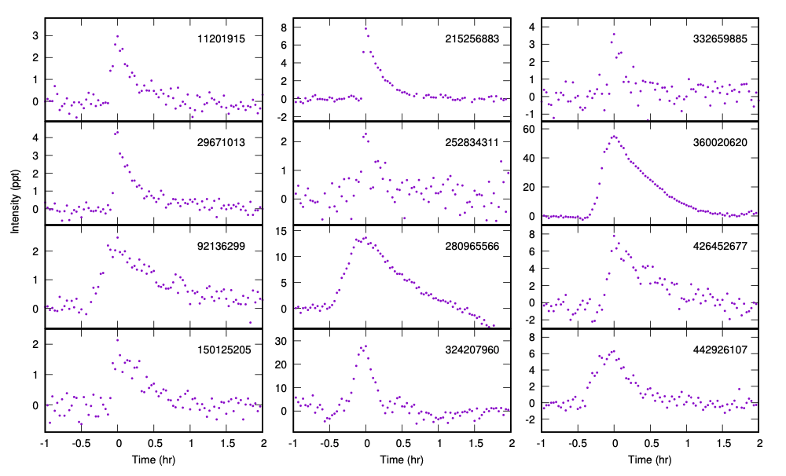
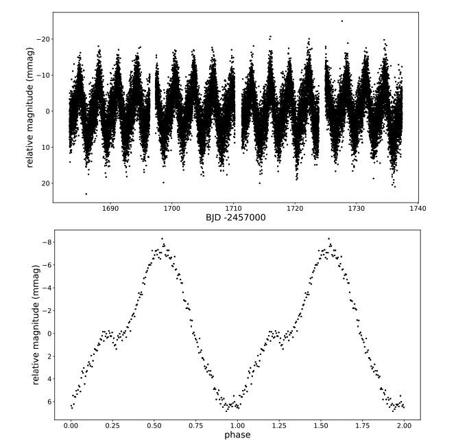

STATUS UPDATE: 20 second cadence targets for Sectors 27 and 28 are now available online.
Hello TESS followers, and welcome to our weekly news bulletin! This week we present three TESS papers from the archive.
Spots and flares in hot main sequence stars (Balona 2020) :
In this paper the author examines spectral type A and B stars in search of variability. Combining data from TESS Sectors 1 through 24, nearly 6000 stars have been classified according to variability. Previous analysis of A and late B stars has indicated that these are rotational variables. This paper presents evidence that rotational modulation is present even among the early B stars. Using TESS data, a search for A and B star flares was conducted which led to the detection of 110 flares in 68 stars. The energies of these flares are greater than those of typical K and M dwarfs by approximately two orders of magnitude. The results of this paper indicate that we need to revise our current understanding of the outer layers of stars with radiative envelopes.
The GALAH Survey: Using Galactic Archaeology to Refine our Knowledge of TESS Target Stars (Clark et. al., 2020) : The authors of this paper have cross-matched spectroscopic, photometric, and astrometric data from the GALAH Data Release 2, Gaia Data Release 2, and the TESS input catalogue in order to create a catalog of physical and chemical properties for 47,285 stars. Data from this combined catalog was used to derive isochrone masses and radii which are precise to within 5%. The authors also used their catalogue to revise the parameters of 12 TESS planetary systems, including CTOI-20125677. Their work indicated that CTOI-20125677 may not actually be a planetary system since the revised radii are closer to stellar sizes. Using molecular ratios, the authors determined the composition and structure of planets with Rp < 4 R⊕. The ratio’s examined indicated that 36% of the planets fall within 2 sigma of the Sun/Earth values, suggesting that the stars may host rocky exoplanets similar in composition to those found within our own Solar system.
Pulsations of the roAp star KIC 10685175 revisited by TESS (Shi et. al., 2020) : KIC 10685175 (TIC 264509538) is a rapidly oscillating Ap star. The star was detected in long cadence Kepler data using super-Nyquist frequency analysis. Using TESS 2-min cadenced data the object has since been re-analyzed and the authors have determined that the previous frequency is a Nyquist alias. The new pulsation frequency of the star is 7..52 min with a rotation frequency of 3.1 days. The star is an oblique pulsator with pulsation amplitude modulated by the rotation, reaching pulsation amplitude maximum at the time of the rotational light minimum. Additional examination has indicated that this star is pulsating in a distorted quadrupole mode, with distortion caused potentially by a strong magnetic field.

Fig 1: Taken from Balona (2020). Examples of A star flares in the TESS data. The maximum of the flare intensity is taken as the zero-point in time. Time is given in hrs and intensity in parts per thousand.

Fig. 2: Taken from Shi et. al., (2020). TESS sectors 14 and 15 data for KIC 10685175. The top panel is the light curve, and the bottom panel is the phase folded light curve which has been folded on the rotation period of 3.1 days. The two rotation cycles are shown for clarity. The time zero-point is BJD 2458711.21391.